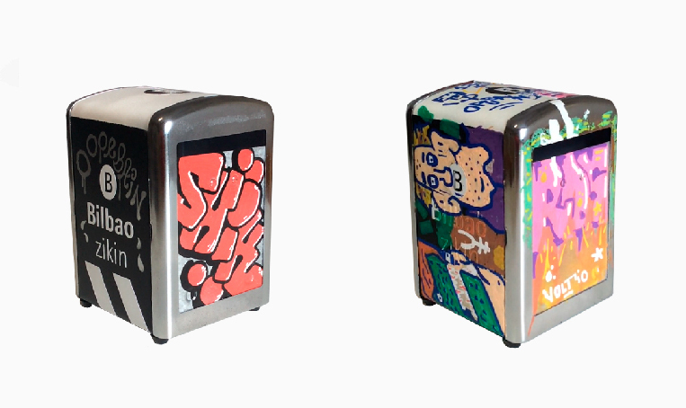

Lovekey
Esta pieza pensada para usarse como llavero, fue un drop para San Valentín. La llave está hecha de resina en un molde conseguido a partir de una pieza matriz impresa en 3D.
La verdadera versión coleccionable era la que venía con el packagin verde o rosa la cual incluía una llave suelta para llevar como llavero y la atada al packaging con opción de colgarla o exponerla depies sujeta por el soporte que incluía.
Servilletero Bilbao Zikin
Este servilletero fue el coleccionable que acompañó al drop Bilbao Zikin.

También hubo colaboraciones con los artistas Shik y Weso para que modificaran el servilletero dandole su estilo.
